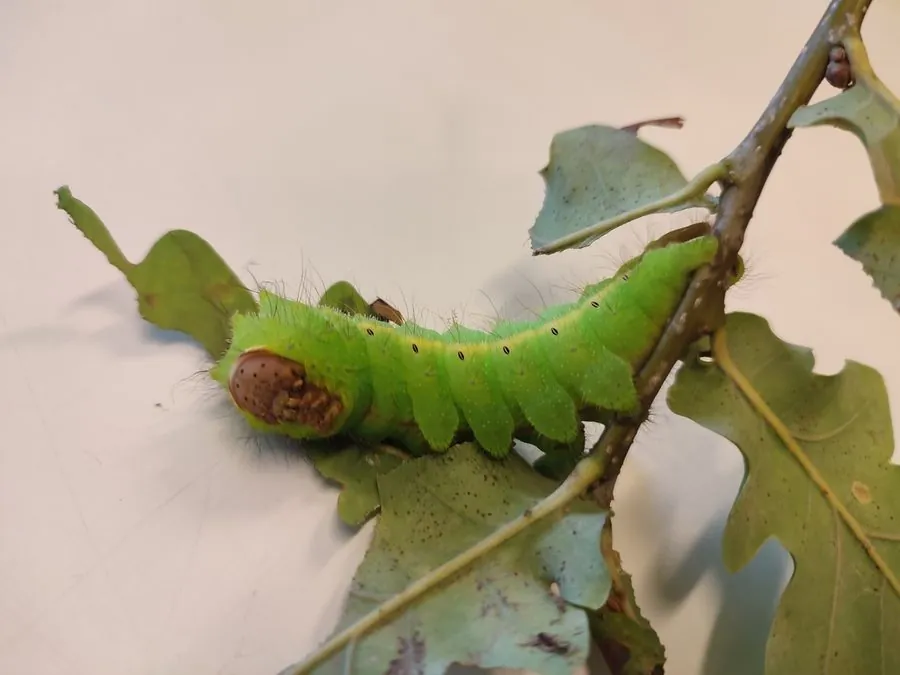

昆虫 · 动物界
柞蚕 Antheraea pernyi

中国特有的驯化绢丝昆虫，幼虫在柞树上放养，茧丝可织柞丝绸，已有数百年养殖历史，是山区重要的经济昆虫。
- 分类
- 门节肢动物门纲昆虫纲目鳞翅目科天蚕蛾科属柞蚕属
- 栖息环境
- 山区柞林与栎类阔叶林，幼虫在柞树上放养取食
- 地理分布
- 中国辽宁、山东、河南、贵州等柞蚕主产区
- 保护级别
- 暂无评估；以人工放养种群为主
物种志
柞蚕成虫翅展约 13–16 cm，体粗壮，翅面黄褐至棕褐色，各翅中央有大型眼斑，眼斑中央透明如月牙；幼虫体色黄绿或青绿，体表有瘤突和细毛，取食柞树叶。成虫多在夜间羽化，白天停歇在树干上。
柞蚕原产中国，长期在辽宁、山东、河南、贵州等地的柞林里放养，一年发生两代，以蛹越冬。幼虫在野外柞树上取食，老熟后结茧化蛹，茧丝呈黄褐色，可织成柞丝绸，坚固耐用，曾是中国重要的出口商品。雌蛾产卵数百粒，成虫寿命约一周，主要靠幼虫期积累的营养完成繁殖。柞蚕是少数仍以野外放养方式生产的绢丝昆虫，其种质资源和柞林生态的保护具有重要意义。
形态与习性
- 食性幼虫取食柞树、麻栎等栎类叶片
- 翅展约 13–16 cm
- 生活史一年发生两代，以蛹越冬
- 蚕丝茧丝黄褐色，可织柞丝绸，坚固耐用
- 繁殖雌蛾产卵数百粒，成虫寿命约一周
- 经济中国山区传统绢丝昆虫和出口产品
趣味知识
- 柞蚕是中国特有的绢丝昆虫，已有数百年的放养历史。
- 柞蚕在野外柞树上放养，是少数仍采用野外放养方式的绢丝昆虫。
- 柞丝绸坚固耐磨，曾是中国重要的传统出口商品。